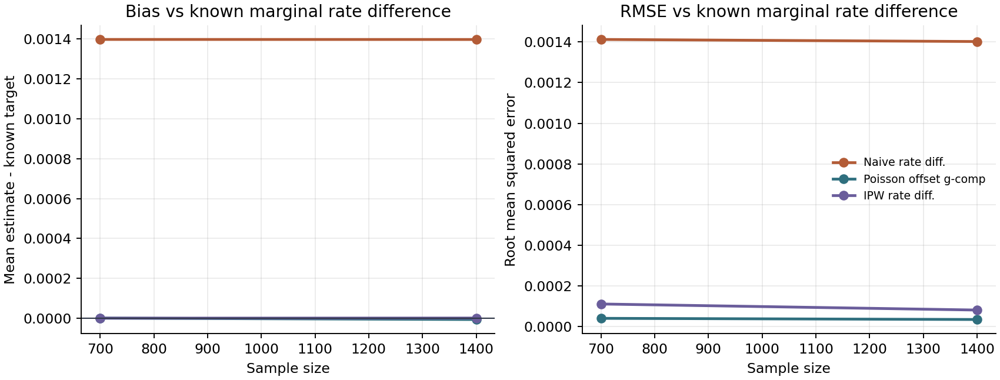
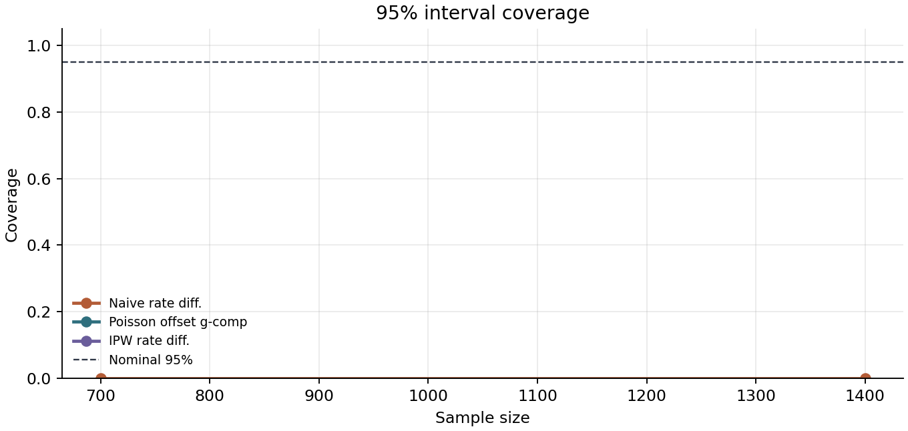
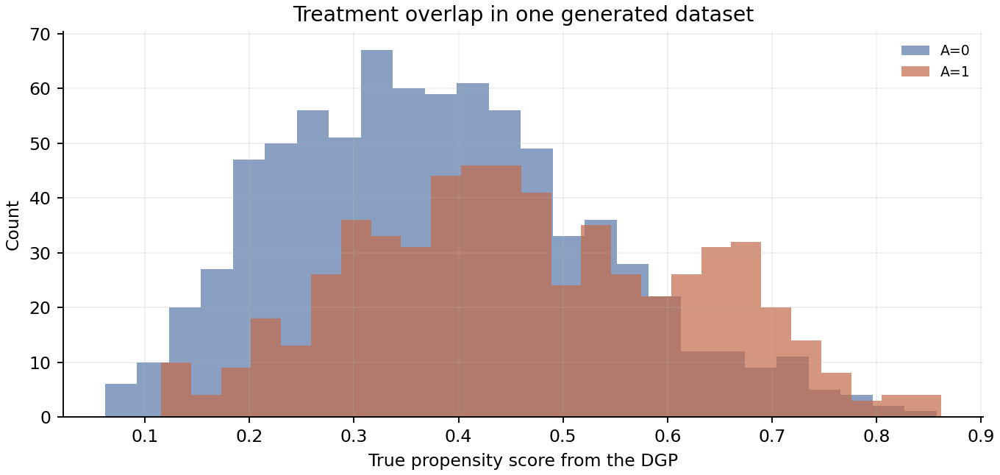

Known-Truth Workflow
DGP Summary
- Schema
- 1.0
- Template
- Cross-sectional binary treatment, count/rate outcome
- Estimand
- marginal_rate_difference: sum(E[Y(1)]) / sum(exposure) - sum(E[Y(0)]) / sum(exposure); primary=rate_difference
- Covariates
- X1 (confounder), X2 (confounder), X3 (prognostic)
- Treatment
- logistic assignment; intercept: -0.35, X1: 0.6, X2: 0.4
- Outcome
- Poisson count/rate; conditional log-rate treatment coefficient 0.35; exposure=exposure, distribution=lognormal(meanlog=10.8, sdlog=0.35), reporting scale=100000; Poisson variance
- Outcome coefficients
- intercept: -5.7, X1: 0.35, X2: 0.25, X3: 0.2
- Effect heterogeneity
- disabled
- Unobserved confounder
- disabled
- Missing data
- disabled
- Clusters
- disabled
Causal Structure
Observed treatment assignment: treatment depends on configured covariates. Prognostic-only covariates: X3.
Count/Rate Outcome With Exposure Offset
The DGP generates event counts with an observed exposure denominator. Oracle marginal rates are computed as total expected counterfactual counts divided by total exposure. The reporting scale is 100000; rate cards show both the natural rate and the scaled public-health-style rate.
Count/rate SE/CI are reported only when an implemented approximation is available. The naive rate difference uses a simple independent Poisson rate approximation when overdispersion is disabled; offset g-computation and IPW rate intervals are left blank rather than filled with misleading uncertainty.
Exposure, Overdispersion, and Overlap
No major positivity warning triggered.
outcome variance is much larger than the mean.
| n | Treatment prevalence | Observed rate | Observed rate scaled | Count mean | Count variance | Variance / mean | Zero fraction | Exposure min | Exposure median | Exposure max | p-score p01 | p-score p99 | Overlap width | Warning | Overdispersion | Exposure imbalance |
|---|---|---|---|---|---|---|---|---|---|---|---|---|---|---|---|---|
| 700.000 | 0.424 | 0.005 | 486.981 | 253.724 | 30564.696 | 120.265 | 0.000 | 16534.011 | 49010.261 | 150958.731 | 0.121 | 0.783 | 0.400 | False | True | False |
| 1400.000 | 0.422 | 0.005 | 484.742 | 253.004 | 31111.139 | 122.869 | 0.000 | 15498.093 | 49122.926 | 157258.032 | 0.117 | 0.786 | 0.408 | False | True | False |
Estimator Summary
| n | Estimator | Mean estimate | Bias | MCSE bias | RMSE | MCSE RMSE | 95% coverage | MCSE coverage | Valid | Failed | Not applicable | Failure rate | Non-ok rate | Replications | Status |
|---|---|---|---|---|---|---|---|---|---|---|---|---|---|---|---|
| 700.000 | Naive rate diff. | 0.003 | 0.001 | 0.000 | 0.001 | 0.000 | 0.000 | 0.000 | 80.000 | 0.000 | 0.000 | 0.000 | 0.000 | 80.000 | ok |
| 700.000 | Poisson offset g-comp | 0.002 | 0.000 | 0.000 | 0.000 | 0.000 | NA | NA | 80.000 | 0.000 | 0.000 | 0.000 | 0.000 | 80.000 | ok |
| 700.000 | IPW rate diff. | 0.002 | 0.000 | 0.000 | 0.000 | 0.000 | NA | NA | 80.000 | 0.000 | 0.000 | 0.000 | 0.000 | 80.000 | ok |
| 1400.000 | Naive rate diff. | 0.003 | 0.001 | 0.000 | 0.001 | 0.000 | 0.000 | 0.000 | 80.000 | 0.000 | 0.000 | 0.000 | 0.000 | 80.000 | ok |
| 1400.000 | Poisson offset g-comp | 0.002 | -0.000 | 0.000 | 0.000 | 0.000 | NA | NA | 80.000 | 0.000 | 0.000 | 0.000 | 0.000 | 80.000 | ok |
| 1400.000 | IPW rate diff. | 0.002 | 0.000 | 0.000 | 0.000 | 0.000 | NA | NA | 80.000 | 0.000 | 0.000 | 0.000 | 0.000 | 80.000 | ok |
MCSE columns quantify simulation uncertainty from the finite number of Monte Carlo replications. They are not estimator standard errors within a fitted dataset.
At the largest sample size, the lowest RMSE estimator in this run is Poisson offset g-comp. Interpret this as scenario-specific Monte Carlo evidence, not a universal ranking.
Plots



Reproducibility
dgpforge run --config examples/causal_count_rate_outcome.yaml --out examples/generated_reports/count_rate_outcome
This folder also includes contract.yaml and reproduce.md for self-contained deterministic reruns. Generated artifacts include report.html, estimator_summary.csv, monte_carlo_results.csv, diagnostics.csv, and the plot PNGs referenced above.